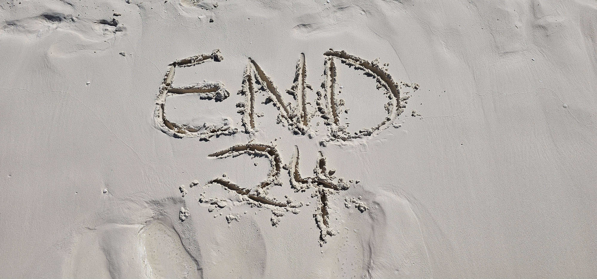
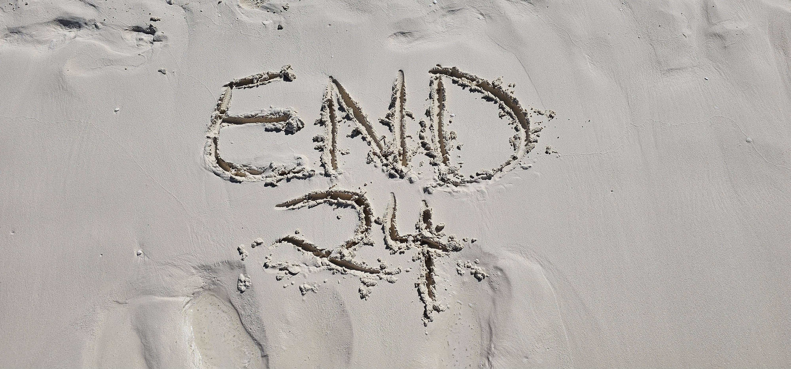

This year was the 2nd Annual Emos's Not Dead Cruise, which set sail from Miami's port to Great Stirrup Cay, Bahamas. With 3,000 like-minded individuals on board, we set sail ready to dive deep into the soul-stirring melodies and angst-filled anthems that defined our emo culture. The star-studded lineup featured the likes of Yellowcard, Underoath, The Devil Wears Prada, Story of the Year, and more. From heartfelt sing-alongs to late-night jam sessions under the stars, this cruise was a celebration of everything that makes our emo hearts beat faster.
The Ship
The Bands
- Yellowcard
- Secondhand Serenade
- Mayday Parade
- Story of the Year
- Bessthefall
- Aaron Gillespie
- Madina Lake
- The Red Jumpsuit Apparatus
- Underoath
- August Burns Red
- The Devil Wears Prada
- Senses Fail
- Armor for Sleep
- Charlotte Sands
- Your Broken Hero
YELLOWCARD
STORY OF THE YEAR
SENSES FAIL
RED JUMPSUIT APPARATUS
MAYDAY PARADE
Great Stirrup Cay
 
